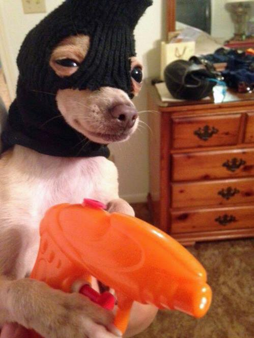

It was a dark and stormy night... then, seemingly out of nowhere for no reason at all, this dog appeared:
This poverty stricken doge has resorted to a life of crime to put food in the bowl of his pups.
...At least that's what he tells himself to get some sleep at night. Maybe it was even the truth in the beginning? Does that even matter at this point? His grip tightens on the only gun-shaped object he could scavenge in this god-forgotten world. Paws shaking, he inhales sharply:
"GIVE ME YOUR CRED CHIP AND KEEP YOUR EYES ON THE GROUND!"
"DON'T YOU DARE LOOK AT ME, HUMANOID FILTH!"
Bile tickles the back of his throat as he watches tears gather at the corner of his victim's left eye. He hates this part.
He's sickened with the doge he has become, but things took a turn for the worst when he got out of the kennel